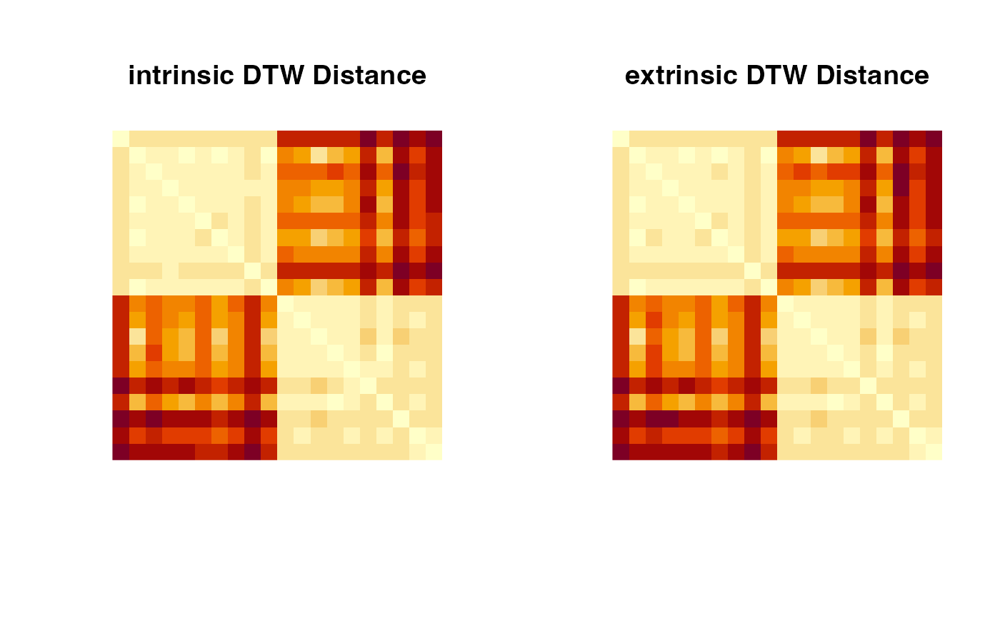

Given two time series - a query \(X = (X_1,X_2,\ldots,X_N)\) and a reference \(Y = (Y_1,Y_2,\ldots,Y_M)\),
riem.dtw computes the most basic version of Dynamic Time Warping (DTW) distance between two series using a symmetric step pattern, meaning
no window constraints and others at all. Although the scope of DTW in Euclidean space-valued objects is rich, it is scarce for manifold-valued curves.
If you are interested in the topic, we refer to dtw package.
riem.dtw(riemobj1, riemobj2, geometry = c("intrinsic", "extrinsic"))a S3 "riemdata" class for \(M\) manifold-valued data along the curve.
a S3 "riemdata" class for \(N\) manifold-valued data along the curve.
(case-insensitive) name of geometry; either geodesic ("intrinsic") or embedded ("extrinsic") geometry.
the distance value.
# \donttest{
#-------------------------------------------------------------------
# Curves on Sphere
#
# curve1 : y = 0.5*cos(x) on the tangent space at (0,0,1)
# curve2 : y = 0.5*sin(x) on the tangent space at (0,0,1)
#
# we will generate two sets for curves of different sizes.
#-------------------------------------------------------------------
## GENERATION
clist = list()
for (i in 1:10){ # curve type 1
vecx = seq(from=-0.9, to=0.9, length.out=sample(10:50, 1))
vecy = 0.5*cos(vecx) + rnorm(length(vecx), sd=0.1)
mats = cbind(vecx, vecy, 1)
clist[[i]] = wrap.sphere(mats/sqrt(rowSums(mats^2)))
}
for (i in 1:10){ # curve type 2
vecx = seq(from=-0.9, to=0.9, length.out=sample(10:50, 1))
vecy = 0.5*sin(vecx) + rnorm(length(vecx), sd=0.1)
mats = cbind(vecx, vecy, 1)
clist[[i+10]] = wrap.sphere(mats/sqrt(rowSums(mats^2)))
}
## COMPUTE DISTANCES
outint = array(0,c(20,20))
outext = array(0,c(20,20))
for (i in 1:19){
for (j in 2:20){
outint[i,j] <- outint[j,i] <- riem.dtw(clist[[i]], clist[[j]],
geometry="intrinsic")
outext[i,j] <- outext[j,i] <- riem.dtw(clist[[i]], clist[[j]],
geometry="extrinsic")
}
}
## VISUALIZE
opar <- par(no.readonly=TRUE)
par(mfrow=c(1,2), pty="s")
image(outint[,20:1], axes=FALSE, main="intrinsic DTW Distance")
image(outext[,20:1], axes=FALSE, main="extrinsic DTW Distance")

par(opar)
# }